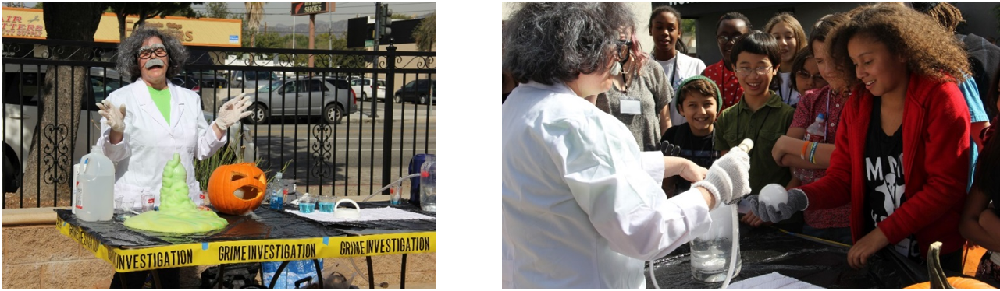
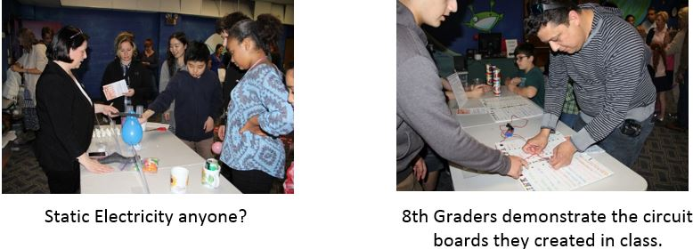

Developing as a Professional Educator

Describe a professional goal you have for yourself.
A professional goal I have for myself is to create more opportunities in the coming years to teach my passion, Science, to my middle school students. Working for an online program and only teaching in person once a week and once a week online did not enable me to teach my passion as much as I would have liked.
Why have you identified this as a need or interest?
Not only is Science my passion, it has come under attack in recent years throughout our country’s educational system at the hands of politicians who would love nothing more than to plunge us back into the “Dark Ages”. The denial of facts relating to evolution, and climate change, due to man- made activity, scares me. I am a firm believer in the First Amendment and Thomas Jefferson’s description of its intent, “Separation of church and state”. I feel we are at critical juncture in our country’s history both socially and environmentally, and we need to act now, not later. Some scientists believe that we have already reached the tipping point, but I cannot give up hope. I must continue to try and affect change by lighting the flames of passion in my students to take Science and our planet’s survival seriously.
What actions will you take?
We are in the process of voting to become a 2 day site and extending the teaching schedule to continue during and after state testing. This would expand the hours I have for teaching Science, not only to my 8th graders, but to my 6th and 7th graders as well. I will be voting in favor of becoming a 2 day site and extending the in-person teaching year. Over the summer I will be evaluating the various Units in Science at the 3 different grade levels and decide which ones are most imperative to teach in-person and online and the ones that students can tackle on their own. I will than begin to create lessons plans based around those Units.
How will you assess goal attainment?
This goal will be obtained if we extend our in-person teaching schedule to 2 days a week and lengthen our teaching year. If it does not become a reality, then I will need to go to plan B. I will offer online Science classes, not only to the 8th graders, but to my 6th and 7th graders as well. This, of course, will be predicated upon the Administration keeping their promise of significantly reducing our administrative responsibilities which would free up our time to incorporate more teaching hours. If Plan A and Plan B fail, than I will proceed to Plan C. Plan C will have me enrolling in a Single Subject credentialing program for Science and start looking for a new position.
Actions I Will Take to Remain a Connected Teacher.
I will continue to incorporate Science throughout the school year in my teaching, our Connection Days (fun enrichment activity days, designed to encourage student bonding and a desire to attend our in-person program), and to encourage our site and the teachers within to host a STEM Night every year. This year we conducted or first STEM Night and it was a huge success with parents, and students alike.
How I Will Sustain My Energy to Remain Passionate?
I gain energy from learning itself. I am a perpetual learner who lovers to read the latest Scientific journals, go to the newest exhibits at the Natural History Museum, Planetarium, or Los Angeles Science Center with my son. I also gain energy form my colleagues. There is nothing better than working with an immensely talented, enthusiastic, group of people who share your passion for teaching. Excitement is contagious and I don’t mind catching it.
What Advice do I Have for New Teachers Entering the Profession?
Teach what you are passionate about. Look for the good in all your students, even the ones who drive you crazy. If you look deeply enough you can find that common denominator from which to build a rapport. Listen twice as much as you talk. You will be surprised by what you hear and have fun!
My alter ego, “Dr. Maddad”, hard at work demonstrating dry ice experiments and exothermic reactions to middle schoolers.

“You can always tell when Robin wants to make a point, she throws her whole body into it”.(D. Harney, Community Day site coordinator and new teacher mentor, 2015)
